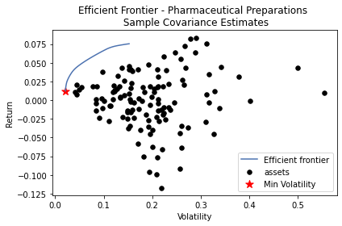
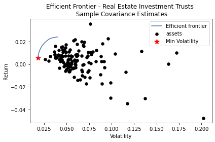

Estimates from Sample Covariance
Contents
import pandas as pd
import numpy as np
import matplotlib.pyplot as plt
import seaborn as sns
Estimates from Sample Covariance¶
Monthly Returns¶
Since we will generate cosine similarity estimates in the next notebook using business description of companies from 2016 to 2018. We only consider monthly returns before 2019.
r_selected = pd.read_csv("data/filtered_r.csv")
# get the mean of all
r_selected.set_index("name", inplace = True)
mu = r_selected.mean(axis = 1)
# compute the covariance matrix
cov = r_selected.T.cov()
Perform Mean-Variance Analysis¶
Collecting dataframe_image
Downloading dataframe_image-0.1.1-py3-none-any.whl (32 kB)
Requirement already satisfied: beautifulsoup4 in /opt/hostedtoolcache/Python/3.8.12/x64/lib/python3.8/site-packages (from dataframe_image) (4.11.1)
Requirement already satisfied: pandas>=0.24 in /opt/hostedtoolcache/Python/3.8.12/x64/lib/python3.8/site-packages (from dataframe_image) (1.4.2)
Collecting aiohttp
Downloading aiohttp-3.8.1-cp38-cp38-manylinux_2_5_x86_64.manylinux1_x86_64.manylinux_2_12_x86_64.manylinux2010_x86_64.whl (1.3 MB)
?25l
━━━━━━━━━━━━━━━━━━━━━━━━━━━━━━━━━━━━━━━━ 0.0/1.3 MB ? eta -:--:--
━━━━━━━━━━━━━━━━━━━━━━━━━━━━━━━━━━━━━━━╸ 1.2/1.3 MB 41.1 MB/s eta 0:00:01
━━━━━━━━━━━━━━━━━━━━━━━━━━━━━━━━━━━━━━━━ 1.3/1.3 MB 34.0 MB/s eta 0:00:00
?25hRequirement already satisfied: requests in /opt/hostedtoolcache/Python/3.8.12/x64/lib/python3.8/site-packages (from dataframe_image) (2.27.1)
Requirement already satisfied: matplotlib>=3.1 in /opt/hostedtoolcache/Python/3.8.12/x64/lib/python3.8/site-packages (from dataframe_image) (3.5.1)
Requirement already satisfied: nbconvert>=5 in /opt/hostedtoolcache/Python/3.8.12/x64/lib/python3.8/site-packages (from dataframe_image) (6.4.5)
Requirement already satisfied: fonttools>=4.22.0 in /opt/hostedtoolcache/Python/3.8.12/x64/lib/python3.8/site-packages (from matplotlib>=3.1->dataframe_image) (4.32.0)
Requirement already satisfied: kiwisolver>=1.0.1 in /opt/hostedtoolcache/Python/3.8.12/x64/lib/python3.8/site-packages (from matplotlib>=3.1->dataframe_image) (1.4.2)
Requirement already satisfied: python-dateutil>=2.7 in /opt/hostedtoolcache/Python/3.8.12/x64/lib/python3.8/site-packages (from matplotlib>=3.1->dataframe_image) (2.8.2)
Requirement already satisfied: packaging>=20.0 in /opt/hostedtoolcache/Python/3.8.12/x64/lib/python3.8/site-packages (from matplotlib>=3.1->dataframe_image) (21.3)
Requirement already satisfied: cycler>=0.10 in /opt/hostedtoolcache/Python/3.8.12/x64/lib/python3.8/site-packages (from matplotlib>=3.1->dataframe_image) (0.11.0)
Requirement already satisfied: pyparsing>=2.2.1 in /opt/hostedtoolcache/Python/3.8.12/x64/lib/python3.8/site-packages (from matplotlib>=3.1->dataframe_image) (3.0.7)
Requirement already satisfied: numpy>=1.17 in /opt/hostedtoolcache/Python/3.8.12/x64/lib/python3.8/site-packages (from matplotlib>=3.1->dataframe_image) (1.22.3)
Requirement already satisfied: pillow>=6.2.0 in /opt/hostedtoolcache/Python/3.8.12/x64/lib/python3.8/site-packages (from matplotlib>=3.1->dataframe_image) (9.1.0)
Requirement already satisfied: traitlets>=5.0 in /opt/hostedtoolcache/Python/3.8.12/x64/lib/python3.8/site-packages (from nbconvert>=5->dataframe_image) (5.1.1)
Requirement already satisfied: nbclient<0.6.0,>=0.5.0 in /opt/hostedtoolcache/Python/3.8.12/x64/lib/python3.8/site-packages (from nbconvert>=5->dataframe_image) (0.5.13)
Requirement already satisfied: pygments>=2.4.1 in /opt/hostedtoolcache/Python/3.8.12/x64/lib/python3.8/site-packages (from nbconvert>=5->dataframe_image) (2.11.2)
Requirement already satisfied: jinja2>=2.4 in /opt/hostedtoolcache/Python/3.8.12/x64/lib/python3.8/site-packages (from nbconvert>=5->dataframe_image) (3.0.3)
Requirement already satisfied: jupyter-core in /opt/hostedtoolcache/Python/3.8.12/x64/lib/python3.8/site-packages (from nbconvert>=5->dataframe_image) (4.9.2)
Requirement already satisfied: testpath in /opt/hostedtoolcache/Python/3.8.12/x64/lib/python3.8/site-packages (from nbconvert>=5->dataframe_image) (0.6.0)
Requirement already satisfied: mistune<2,>=0.8.1 in /opt/hostedtoolcache/Python/3.8.12/x64/lib/python3.8/site-packages (from nbconvert>=5->dataframe_image) (0.8.4)
Requirement already satisfied: nbformat>=4.4 in /opt/hostedtoolcache/Python/3.8.12/x64/lib/python3.8/site-packages (from nbconvert>=5->dataframe_image) (5.3.0)
Requirement already satisfied: pandocfilters>=1.4.1 in /opt/hostedtoolcache/Python/3.8.12/x64/lib/python3.8/site-packages (from nbconvert>=5->dataframe_image) (1.5.0)
Requirement already satisfied: jupyterlab-pygments in /opt/hostedtoolcache/Python/3.8.12/x64/lib/python3.8/site-packages (from nbconvert>=5->dataframe_image) (0.2.0)
Requirement already satisfied: entrypoints>=0.2.2 in /opt/hostedtoolcache/Python/3.8.12/x64/lib/python3.8/site-packages (from nbconvert>=5->dataframe_image) (0.4)
Requirement already satisfied: defusedxml in /opt/hostedtoolcache/Python/3.8.12/x64/lib/python3.8/site-packages (from nbconvert>=5->dataframe_image) (0.7.1)
Requirement already satisfied: bleach in /opt/hostedtoolcache/Python/3.8.12/x64/lib/python3.8/site-packages (from nbconvert>=5->dataframe_image) (5.0.0)
Requirement already satisfied: MarkupSafe>=2.0 in /opt/hostedtoolcache/Python/3.8.12/x64/lib/python3.8/site-packages (from nbconvert>=5->dataframe_image) (2.1.1)
Requirement already satisfied: pytz>=2020.1 in /opt/hostedtoolcache/Python/3.8.12/x64/lib/python3.8/site-packages (from pandas>=0.24->dataframe_image) (2022.1)
Collecting async-timeout<5.0,>=4.0.0a3
Downloading async_timeout-4.0.2-py3-none-any.whl (5.8 kB)
Requirement already satisfied: attrs>=17.3.0 in /opt/hostedtoolcache/Python/3.8.12/x64/lib/python3.8/site-packages (from aiohttp->dataframe_image) (21.4.0)
Collecting aiosignal>=1.1.2
Downloading aiosignal-1.2.0-py3-none-any.whl (8.2 kB)
Collecting multidict<7.0,>=4.5
Downloading multidict-6.0.2-cp38-cp38-manylinux_2_17_x86_64.manylinux2014_x86_64.whl (121 kB)
?25l ━━━━━━━━━━━━━━━━━━━━━━━━━━━━━━━━━━━━━━━━ 0.0/121.3 KB ? eta -:--:--
━━━━━━━━━━━━━━━━━━━━━━━━━━━━━━━━━━━━━━ 121.3/121.3 KB 36.2 MB/s eta 0:00:00
?25hRequirement already satisfied: charset-normalizer<3.0,>=2.0 in /opt/hostedtoolcache/Python/3.8.12/x64/lib/python3.8/site-packages (from aiohttp->dataframe_image) (2.0.12)
Collecting frozenlist>=1.1.1
Downloading frozenlist-1.3.0-cp38-cp38-manylinux_2_5_x86_64.manylinux1_x86_64.manylinux_2_17_x86_64.manylinux2014_x86_64.whl (158 kB)
?25l ━━━━━━━━━━━━━━━━━━━━━━━━━━━━━━━━━━━━━━━━ 0.0/158.7 KB ? eta -:--:--
━━━━━━━━━━━━━━━━━━━━━━━━━━━━━━━━━━━━━━ 158.7/158.7 KB 43.5 MB/s eta 0:00:00
?25h
Collecting yarl<2.0,>=1.0
Downloading yarl-1.7.2-cp38-cp38-manylinux_2_5_x86_64.manylinux1_x86_64.manylinux_2_12_x86_64.manylinux2010_x86_64.whl (308 kB)
?25l ━━━━━━━━━━━━━━━━━━━━━━━━━━━━━━━━━━━━━━━━ 0.0/308.6 KB ? eta -:--:--
━━━━━━━━━━━━━━━━━━━━━━━━━━━━━━━━━━━━━━ 308.6/308.6 KB 71.3 MB/s eta 0:00:00
?25hRequirement already satisfied: soupsieve>1.2 in /opt/hostedtoolcache/Python/3.8.12/x64/lib/python3.8/site-packages (from beautifulsoup4->dataframe_image) (2.3.2)
Requirement already satisfied: certifi>=2017.4.17 in /opt/hostedtoolcache/Python/3.8.12/x64/lib/python3.8/site-packages (from requests->dataframe_image) (2021.10.8)
Requirement already satisfied: idna<4,>=2.5 in /opt/hostedtoolcache/Python/3.8.12/x64/lib/python3.8/site-packages (from requests->dataframe_image) (3.3)
Requirement already satisfied: urllib3<1.27,>=1.21.1 in /opt/hostedtoolcache/Python/3.8.12/x64/lib/python3.8/site-packages (from requests->dataframe_image) (1.26.9)
Requirement already satisfied: jupyter-client>=6.1.5 in /opt/hostedtoolcache/Python/3.8.12/x64/lib/python3.8/site-packages (from nbclient<0.6.0,>=0.5.0->nbconvert>=5->dataframe_image) (7.2.2)
Requirement already satisfied: nest-asyncio in /opt/hostedtoolcache/Python/3.8.12/x64/lib/python3.8/site-packages (from nbclient<0.6.0,>=0.5.0->nbconvert>=5->dataframe_image) (1.5.5)
Requirement already satisfied: fastjsonschema in /opt/hostedtoolcache/Python/3.8.12/x64/lib/python3.8/site-packages (from nbformat>=4.4->nbconvert>=5->dataframe_image) (2.15.3)
Requirement already satisfied: jsonschema>=2.6 in /opt/hostedtoolcache/Python/3.8.12/x64/lib/python3.8/site-packages (from nbformat>=4.4->nbconvert>=5->dataframe_image) (3.2.0)
Requirement already satisfied: six>=1.5 in /opt/hostedtoolcache/Python/3.8.12/x64/lib/python3.8/site-packages (from python-dateutil>=2.7->matplotlib>=3.1->dataframe_image) (1.16.0)
Requirement already satisfied: webencodings in /opt/hostedtoolcache/Python/3.8.12/x64/lib/python3.8/site-packages (from bleach->nbconvert>=5->dataframe_image) (0.5.1)
Requirement already satisfied: setuptools in /opt/hostedtoolcache/Python/3.8.12/x64/lib/python3.8/site-packages (from jsonschema>=2.6->nbformat>=4.4->nbconvert>=5->dataframe_image) (56.0.0)
Requirement already satisfied: pyrsistent>=0.14.0 in /opt/hostedtoolcache/Python/3.8.12/x64/lib/python3.8/site-packages (from jsonschema>=2.6->nbformat>=4.4->nbconvert>=5->dataframe_image) (0.18.1)
Requirement already satisfied: pyzmq>=22.3 in /opt/hostedtoolcache/Python/3.8.12/x64/lib/python3.8/site-packages (from jupyter-client>=6.1.5->nbclient<0.6.0,>=0.5.0->nbconvert>=5->dataframe_image) (22.3.0)
Requirement already satisfied: tornado>=6.0 in /opt/hostedtoolcache/Python/3.8.12/x64/lib/python3.8/site-packages (from jupyter-client>=6.1.5->nbclient<0.6.0,>=0.5.0->nbconvert>=5->dataframe_image) (6.1)
Installing collected packages: multidict, frozenlist, async-timeout, yarl, aiosignal, aiohttp, dataframe_image
Successfully installed aiohttp-3.8.1 aiosignal-1.2.0 async-timeout-4.0.2 dataframe_image-0.1.1 frozenlist-1.3.0 multidict-6.0.2 yarl-1.7.2
Note: you may need to restart the kernel to use updated packages.
Collecting PyPortfolioOpt
Downloading pyportfolioopt-1.5.2-py3-none-any.whl (61 kB)
?25l ━━━━━━━━━━━━━━━━━━━━━━━━━━━━━━━━━━━━━━━━ 0.0/61.4 KB ? eta -:--:--
━━━━━━━━━━━━━━━━━━━━━━━━━━━━━━━━━━━━━━━━ 61.4/61.4 KB 14.9 MB/s eta 0:00:00
?25h
Requirement already satisfied: pandas>=0.19 in /opt/hostedtoolcache/Python/3.8.12/x64/lib/python3.8/site-packages (from PyPortfolioOpt) (1.4.2)
Requirement already satisfied: numpy<2.0,>=1.12 in /opt/hostedtoolcache/Python/3.8.12/x64/lib/python3.8/site-packages (from PyPortfolioOpt) (1.22.3)
Requirement already satisfied: scipy<2.0,>=1.3 in /opt/hostedtoolcache/Python/3.8.12/x64/lib/python3.8/site-packages (from PyPortfolioOpt) (1.8.0)
Collecting cvxpy<2.0.0,>=1.1.10
Downloading cvxpy-1.2.0-cp38-cp38-manylinux_2_24_x86_64.whl (2.8 MB)
?25l ━━━━━━━━━━━━━━━━━━━━━━━━━━━━━━━━━━━━━━━━ 0.0/2.8 MB ? eta -:--:--
━━━━━━━━━━━━━━━━━━━━━━━━━━━━━━━━━━━━━━━╸ 2.8/2.8 MB 109.3 MB/s eta 0:00:01
━━━━━━━━━━━━━━━━━━━━━━━━━━━━━━━━━━━━━━━━ 2.8/2.8 MB 75.7 MB/s eta 0:00:00
?25h
Collecting osqp>=0.4.1
Downloading osqp-0.6.2.post5-cp38-cp38-manylinux_2_5_x86_64.manylinux1_x86_64.manylinux_2_17_x86_64.manylinux2014_x86_64.whl (299 kB)
?25l ━━━━━━━━━━━━━━━━━━━━━━━━━━━━━━━━━━━━━━━━ 0.0/299.2 KB ? eta -:--:--
━━━━━━━━━━━━━━━━━━━━━━━━━━━━━━━━━━━━━━ 299.2/299.2 KB 63.1 MB/s eta 0:00:00
?25hCollecting scs>=1.1.6
Downloading scs-3.2.0-cp38-cp38-manylinux_2_17_x86_64.manylinux2014_x86_64.whl (10.7 MB)
?25l ━━━━━━━━━━━━━━━━━━━━━━━━━━━━━━━━━━━━━━━━ 0.0/10.7 MB ? eta -:--:--
━━━━━━━━━━━━━━━━━━━━━━━╺━━━━━━━━━━━━━━━━ 6.2/10.7 MB 185.6 MB/s eta 0:00:01
━━━━━━━━━━━━━━━━━━━━━━━━━━━━━━━━━━━━━━╸ 10.7/10.7 MB 186.7 MB/s eta 0:00:01
━━━━━━━━━━━━━━━━━━━━━━━━━━━━━━━━━━━━━━━ 10.7/10.7 MB 114.5 MB/s eta 0:00:00
?25h
Collecting ecos>=2
Downloading ecos-2.0.10-cp38-cp38-manylinux_2_17_x86_64.manylinux2014_x86_64.manylinux_2_24_x86_64.whl (191 kB)
?25l ━━━━━━━━━━━━━━━━━━━━━━━━━━━━━━━━━━━━━━━━ 0.0/191.3 KB ? eta -:--:--
━━━━━━━━━━━━━━━━━━━━━━━━━━━━━━━━━━━━━━ 191.3/191.3 KB 57.4 MB/s eta 0:00:00
?25h
Requirement already satisfied: pytz>=2020.1 in /opt/hostedtoolcache/Python/3.8.12/x64/lib/python3.8/site-packages (from pandas>=0.19->PyPortfolioOpt) (2022.1)
Requirement already satisfied: python-dateutil>=2.8.1 in /opt/hostedtoolcache/Python/3.8.12/x64/lib/python3.8/site-packages (from pandas>=0.19->PyPortfolioOpt) (2.8.2)
Collecting qdldl
Downloading qdldl-0.1.5.post2-cp38-cp38-manylinux_2_17_x86_64.manylinux2014_x86_64.whl (1.0 MB)
?25l ━━━━━━━━━━━━━━━━━━━━━━━━━━━━━━━━━━━━━━━━ 0.0/1.0 MB ? eta -:--:--
━━━━━━━━━━━━━━━━━━━━━━━━━━━━━━━━━━━━━━━━ 1.0/1.0 MB 98.7 MB/s eta 0:00:00
?25hRequirement already satisfied: six>=1.5 in /opt/hostedtoolcache/Python/3.8.12/x64/lib/python3.8/site-packages (from python-dateutil>=2.8.1->pandas>=0.19->PyPortfolioOpt) (1.16.0)
Installing collected packages: scs, qdldl, ecos, osqp, cvxpy, PyPortfolioOpt
Successfully installed PyPortfolioOpt-1.5.2 cvxpy-1.2.0 ecos-2.0.10 osqp-0.6.2.post5 qdldl-0.1.5.post2 scs-3.2.0
Note: you may need to restart the kernel to use updated packages.
from pypfopt import EfficientFrontier
from pypfopt import risk_models
from pypfopt import expected_returns
from pypfopt import objective_functions
from pypfopt import plotting
df = pd.read_csv('../data/preprocessed.csv',
usecols = ['reportingDate', 'name', 'CIK',
'coDescription_stopwords', 'SIC', 'SIC_desc'])
df = df.set_index(df.name)
# get the names of the companies in the pharmaceutical preparations industry
Pharm = df[df.SIC == 2834]
Pharm_list = Pharm.index
# get the companies name that match return data and business description data
SET = (set(Pharm_list) & set(r_selected.index))
LIST = [*SET, ]
Mean and Covariance for Returns in the Pharmaceutical Preparations Industry¶
mu_Pharm = mu[LIST]
tmp = cov[LIST].T
cov_Pharm = tmp[LIST]
Minmum Volatility Portfolio Weights¶
Comparing sample mean and covariance¶
ef1 = EfficientFrontier(mu_Pharm, cov_Pharm, weight_bounds=(0, 0.2))
fig, ax = plt.subplots()
plotting.plot_efficient_frontier(ef1, ax=ax, show_assets=True)
# Find and plot the tangency portfolio
ef2 = EfficientFrontier(mu_Pharm, cov_Pharm, weight_bounds=(0, 0.2))
# min volatility
ef2.min_volatility()
ret_tangent, std_tangent, _ = ef2.portfolio_performance()
ax.scatter(std_tangent, ret_tangent, marker="*", s=100, c="r", label="Min Volatility")
# Format
ax.set_title("Efficient Frontier - Pharmaceutical Preparations \n Sample Covariance Estimates")
ax.legend()
plt.tight_layout()
plt.savefig('images/Efficient_Frontier_Returns.png', dpi=200, bbox_inches='tight')
plt.show()

min volatility¶
ef2.portfolio_performance(verbose=True);
Expected annual return: 1.2%
Annual volatility: 2.1%
Sharpe Ratio: -0.35
[0418/004855.580359:WARNING:bluez_dbus_manager.cc(248)] Floss manager not present, cannot set Floss enable/disable.
[0418/004855.912669:ERROR:sandbox_linux.cc(377)] InitializeSandbox() called with multiple threads in process gpu-process.
[0418/004857.887073:INFO:headless_shell.cc(659)] Written to file /tmp/tmpuhddyn9p/temp.png.
min_vol
| Company_Name | Weight | |
|---|---|---|
| 0 | PROPHASE LABS, INC. | 0.05120 |
| 1 | MERCK & CO., INC. | 0.20000 |
| 2 | XENON PHARMACEUTICALS INC. | 0.01350 |
| 3 | BIODELIVERY SCIENCES INTERNATIONAL INC | 0.03680 |
| 4 | RECRO PHARMA, INC. | 0.02010 |
| 5 | ASSEMBLY BIOSCIENCES, INC. | 0.05775 |
| 6 | BRISTOL MYERS SQUIBB CO | 0.12824 |
| 7 | ORAMED PHARMACEUTICALS INC. | 0.04982 |
| 8 | ARATANA THERAPEUTICS, INC. | 0.03678 |
| 9 | CHEMBIO DIAGNOSTICS, INC. | 0.02843 |
| 10 | VTV THERAPEUTICS INC. | 0.02372 |
| 11 | STEMLINE THERAPEUTICS INC | 0.04273 |
| 12 | IMPRIMIS PHARMACEUTICALS, INC. | 0.04181 |
| 13 | MANNKIND CORP | 0.02048 |
| 14 | JOHNSON & JOHNSON | 0.17878 |
| 15 | PFENEX INC. | 0.03777 |
| 16 | LIPOCINE INC. | 0.00683 |
| 17 | ZOETIS INC. | 0.01195 |
| 18 | ACHAOGEN INC | 0.00515 |
| 19 | CYTOMX THERAPEUTICS, INC. | 0.00520 |
| 20 | HEAT BIOLOGICS, INC. | 0.00297 |
Get results for the other 4 industries¶
Real Estate Investment Trusts¶

min volatility¶
Expected annual return: 0.5%
Annual volatility: 1.8%
Sharpe Ratio: -0.80
[0418/004900.830839:WARNING:bluez_dbus_manager.cc(248)] Floss manager not present, cannot set Floss enable/disable.
[0418/004900.879918:ERROR:sandbox_linux.cc(377)] InitializeSandbox() called with multiple threads in process gpu-process.
[0418/004901.026539:INFO:headless_shell.cc(659)] Written to file /tmp/tmp7xvjakqp/temp.png.
| Company_Name | Weight | |
|---|---|---|
| 0 | EQUITY COMMONWEALTH | 0.20000 |
| 1 | HMG COURTLAND PROPERTIES INC | 0.12520 |
| 2 | ALEXANDERS INC | 0.02292 |
| 3 | ARES COMMERCIAL REAL ESTATE CORP | 0.09123 |
| 4 | MANHATTAN BRIDGE CAPITAL, INC | 0.01480 |
| 5 | BRT APARTMENTS CORP. | 0.01720 |
| 6 | GREAT AJAX CORP. | 0.20000 |
| 7 | CROWN CASTLE INTERNATIONAL CORP | 0.04853 |
| 8 | CIM COMMERCIAL TRUST CORP | 0.05453 |
| 9 | PUBLIC STORAGE | 0.10950 |
| 10 | NEW YORK MORTGAGE TRUST INC | 0.02065 |
| 11 | LADDER CAPITAL CORP | 0.04406 |
| 12 | IMPAC MORTGAGE HOLDINGS INC | 0.05104 |
State Commercial Banks (commercial banking)¶

min volatility¶
Expected annual return: 1.2%
Annual volatility: 2.7%
Sharpe Ratio: -0.28
[0418/004902.970700:WARNING:bluez_dbus_manager.cc(248)] Floss manager not present, cannot set Floss enable/disable.
[0418/004902.998188:ERROR:sandbox_linux.cc(377)] InitializeSandbox() called with multiple threads in process gpu-process.
[0418/004903.143279:INFO:headless_shell.cc(659)] Written to file /tmp/tmppy0qnap4/temp.png.
| Company_Name | Weight | |
|---|---|---|
| 0 | RELIANT BANCORP, INC. | 0.12273 |
| 1 | CITIZENS & NORTHERN CORP | 0.05375 |
| 2 | BANK OF THE JAMES FINANCIAL GROUP INC | 0.00178 |
| 3 | VILLAGE BANK & TRUST FINANCIAL CORP. | 0.13994 |
| 4 | FIRST COMMUNITY CORP /SC/ | 0.05076 |
| 5 | MACKINAC FINANCIAL CORP /MI/ | 0.02478 |
| 6 | FAUQUIER BANKSHARES, INC. | 0.02143 |
| 7 | GUARANTY FEDERAL BANCSHARES INC | 0.17724 |
| 8 | CAROLINA TRUST BANCSHARES, INC. | 0.11786 |
| 9 | INVESTAR HOLDING CORP | 0.19440 |
| 10 | BANK OF NEW YORK MELLON CORP | 0.09533 |